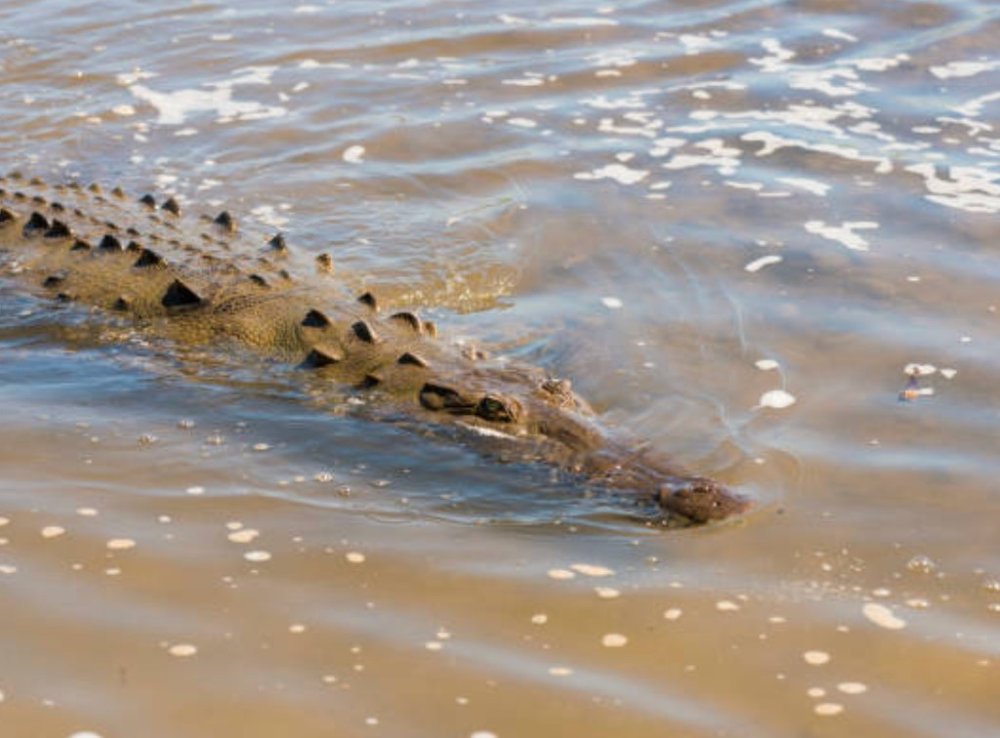
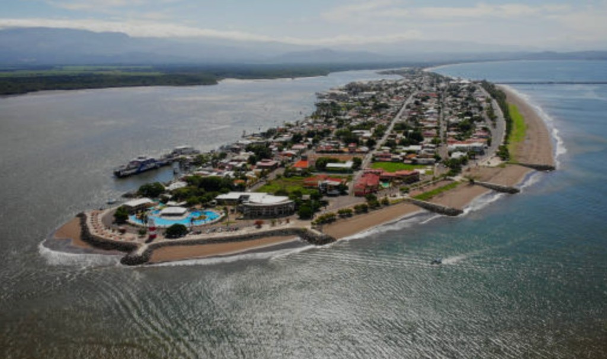

Most popular
Best of Costa Rica Tour
A comprehensive introduction to Costa Rica — countryside, wildlife, local lunch and highlights suited to first-time visitors with one day in port.
Check tour details →Puntarenas is a smaller Pacific coast cruise port — not a mega-resort, but an excellent gateway to Costa Rica wildlife, rainforest and countryside within a single day ashore.
Compare shore excursion options built around crocodile river safaris, rainforest canopy, local culture and private touring — with cruise-passenger timing in mind.
Puntarenas sits on Costa Rica's Central Pacific coast. Most ships dock for one day, so the best Puntarenas shore excursions focus on nearby rainforest, the Tarcoles River crocodile habitat, scenic countryside and authentic local experiences — not long drives to distant destinations.
We help cruise passengers choose from nature, wildlife and private tour options that match their ship schedule, mobility and interests. Tour details are provided on confirmation. Always check your cruise ship arrival and departure times before booking.
Popular Costa Rica cruise excursions from Puntarenas — compare duration, activity level and wildlife focus before you book.
A comprehensive introduction to Costa Rica — countryside, wildlife, local lunch and highlights suited to first-time visitors with one day in port.
Check tour details →Combine rainforest horseback riding with a Tarcoles River boat safari for crocodiles, birds and Central Pacific scenery.
Check tour details →Rainforest canopy adventure with crocodile river viewing — ideal for passengers who want wildlife without extreme activity.
Check tour details →Private tour with Tarcoles River ecosystem focus — flexible pacing for families and small groups who prefer not to share a bus.
Ask about private tours →The signature Puntarenas wildlife experience — massive crocodiles, tropical birds and monkeys along the Tarcoles River.
Check tour details →Private transfer for cruise passengers continuing to SJO after disembarkation — reliable timing for flight connections.
Check transfer options →The Central Pacific region around Puntarenas is one of Costa Rica's most accessible wildlife corridors for cruise passengers. Within an hour of the port you can reach rainforest trails, hanging bridges, working farms and the famous Tarcoles River — home to some of the largest American crocodiles in the wild.

Shared coach tours suit many passengers, but private options make sense when you want custom pacing, a dedicated guide, or a itinerary built around your group's mobility and interests.

Puntarenas is a working port city on a narrow peninsula — not a polished resort town. Ships typically tender or dock with a short walk or shuttle to town. Most quality excursions pick up near the pier and return with buffer time before all-aboard.
Read our Puntarenas port guide for pier logistics, what to expect ashore, and how to plan your day — or jump to our one day in Puntarenas itinerary.
Read the port guideCompare Puntarenas shore excursion options by duration, activity level and wildlife focus. Match the tour to your ship schedule and walking ability.
| Tour | Duration | Activity Level | Best For | Food/Drink | Private/Shared | Wildlife Focus |
|---|---|---|---|---|---|---|
| Best of Costa Rica | 7 hrs | Easy | First-time visitors | Lunch | Shared | High |
| Eco Horseback & Crocodile Safari | 6 hrs | Moderate | Active nature lovers | Snack | Shared | High |
| Tarcoles River Crocodile Safari | 6 hrs | Easy | Wildlife photographers | Snack | Shared | Very high |
| Rainforest Wildlife Tour | 7 hrs | Easy | Canopy + river combo | Meal | Shared | High |
| Private Charming Puntarenas | 6 hrs | Easy | Private groups | Lunch | Private | High |
| Private Puntarenas Highlights | 7 hrs | Moderate | Custom sightseeing | Snack | Private | High |
| Private Vehicle & Guide Half Day | 4 hrs | Easy | Flexible itineraries | Beverage | Private | Medium |
| SJO Airport Transfer | ~1.5 hrs | Easy | Post-cruise flights | Not included | Private | Low |
Common questions from cruise passengers visiting Puntarenas, Costa Rica.
Most ships stay 8–10 hours. Full-day tours run 6–7 hours including transport; half-day private tours suit shorter calls or passengers who want free time in town. Always confirm against your ship's all-aboard time.
Reputable operators plan return times with a buffer before all-aboard. Choose tours matched to your mobility, book early for popular dates, and verify pickup location at the pier. Tour details are provided on confirmation.
The Tarcoles River crocodile safari is the region's signature experience. For more variety, combine rainforest canopy with river wildlife on a rainforest wildlife tour or the Best of Costa Rica overview tour.
Choose from nature, wildlife and private tour options matched to your cruise schedule. We help you find the right fit — without the hype.